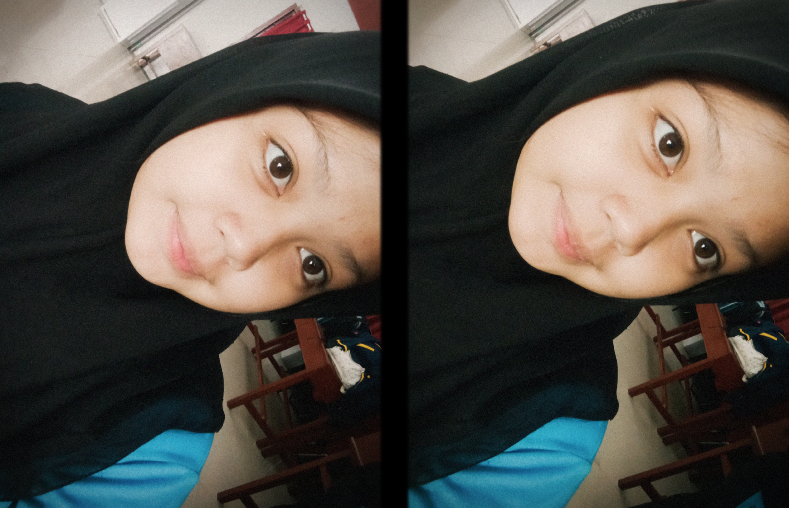

Data Diri
| Nama | : | Syafira Azahra Ginting |
| Tempat/Tanggal lahir | : | Medan, 05 Januari 2009 |
| Agama | : | Islam |
| Alamat | : | jln. bunga terompet |
| gmail | : | syaxxxx@gmail.com |
| No Hp | : | 08121379xxxx |
Haii guys, jumpa lagi dengan saya syafira, nah kali ini saya akan memperlihatkan profil diri saya scroll terus yaa!!!
| Nama | : | Syafira Azahra Ginting |
| Tempat/Tanggal lahir | : | Medan, 05 Januari 2009 |
| Agama | : | Islam |
| Alamat | : | jln. bunga terompet |
| gmail | : | syaxxxx@gmail.com |
| No Hp | : | 08121379xxxx |
Hobi Saya adalah memasak, nah kenapa si harus memasak?? gatau aja kayak suka aja gitu di dapur ditambah banya lewat fyp tiktok makanan, jaadi yaa suka ajaa gitu walaupun berhasil ga berhasil hehee.
Nah ga hanya masak saya juga anaknya seneng dan suka sekali jalan jalan , jalan jalaan yang ga ada tujuan juga saya suka yang penting ga dirumah emg anaknya hobi melalakk wkwkk.
.jpeg)
Nah guys, makanan fav aku ini dimsum, serius ini itu enak kali apalagi saus nya yang enak pedes gitu, pokoknya kalau udah dikasi dimsum seketika mood naik.
Nah guys, mapel favorit saya itu adalah b.indo karnaa b.indo ini asik banya wawasan, baru pembelajaran juga sangai ga yang terlalu tegang kali, dan tugas akhir nya selalu keluar gitu ga selalu si cuma kdang kadang, jadinya seru.